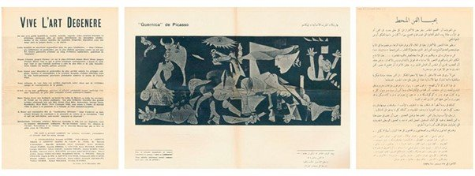

Originally published in Mada Masr on 8 February 2017
By Ismail Fayed

Art and Liberty manifesto, 1938. Scottish National Gallery of Modern Art Archives, Edinburgh
As an Egyptian, there was something delightfully subversive upon entering the recent Art and Liberty: Rupture, War and Surrealism in Egypt (1938–1948) exhibition at the Centre Pompidou to find Anwar Kamel's voice echo in Arabic through the space explaining what the Egyptian surrealists attempted to do.
But my delight disappeared when I glanced at the main wall text to see only one Egyptian public institution listed among the acknowledged collections and patrons: the Rateb Seddik Art Center, which loaned Seddik's works. Partners and lenders otherwise included a few private Egyptian collections (such as Waleed Abdel Khalek from Al Masar Gallery, the Abdel Hadi El-Gazzar Estate, the El-Telmissany family, Fatenn Mostafa Kanafani, Mai El Dib and the Sawirises) and the extensive collection of Qatar's Prince Al Thani. Later, I found that the catalogue also lists the Egyptian Fine Arts Sector as a lender, of just two works from the Museum of Modern Egyptian Art. Yet this means that an exhibition of over 130 works by mainly Egyptian artists in the biggest modern and contemporary art museum in France saw only two of Egypt's public collections loan a minimal number of works. As the key patron and collector of art since the late 1950s, the Egyptian government holds the country's largest collection of modern art.
In contrast, the Fine Arts Sector loaned over 50 artworks for the Sharjah Art Foundation's simultaneous exhibition, When Art Becomes Liberty at Cairo's Palace of the Arts. The difficulties of artwork transportation aside, I wonder whether we're seeing a bidding war between two of the region's largest culture patrons, the UAE and Qatar, for prestige, capitalist enlightenment and "progress." Just as the art world often "discovers" historically radical works and gives them a glossy repackaging, in the Cairo and Paris exhibitions we see a movement rooted in both a communist struggle against fascism and Stalinism and a social revolution against capitalism co-opted by the forces it rose against. I couldn't help but wonder how Georges Henein, one of many surrealists who paid enormous prices for their ethical commitment, would have received the exhibition. There is always tension in the arts between the need for patronage and a critical stance toward it. No model of philanthropy is free from agendas or interests, and ideas about art's meaning and role manifest in the ways such patronage takes shape. Just over a century after Egypt's fine arts school was founded, a critical juncture in our history, our long legacy of modern art is being appropriated by a global art market.
Art and Liberty was part of the Centre Pompidou's anniversary exhibition of French surrealist leader Andre Breton, and continues the consistent interest of deputy director of the Pompidou's National Museum of Modern Art, Catherine David, in the Middle East's contemporary art practices. David's long-term project Contemporary Arab Representations began in 1998, and she curated DI/VISIONS. Culture and Politics of the Middle East in Berlin (2007) as well as Unedited History Iran (1960-2014) (2014) in Paris, for example. The Pompidou's major exhibition Multiple Modernities 1905-1970 (2015) had a special focus on the Maghreb, Middle East and Africa, and it showed some works by female Arab artists in the exhibition elles@centrepompidou (2009). These were part of the institution's interest in internationalizing its collection and focus, starting with its 1989 international exhibition, The Magicians of the Earth, which featured six Arab artists out of a total of 100. Art and Liberty was the first time it dedicated an exhibition to an Egyptian movement.
It was the movement's "international focus," however, that dominated the exhibition. Situating them as part of a larger network of artists and ideas was the driving theme behind the works' presentation and contextualization. For me the international emphasis, which is connected to a current trend of "global modernities," or non-western artistic movements made intelligible through reference to a wider Western idea, almost undid the exhibition. The exhibition illustrated an "international pedigree" through references to British patrons and artists (Lee Miller and Robert Medley), Syrian-Egyptian contributors (Amy Nimr), and cosmopolitans who were not entirely European nor entirely Egyptian (Mayo). The curators, Sam Bardaouil and Till Fellrath, went to great lengths to show Henein's prodigious network of correspondents, which included international Surrealist figures from Tokyo to Beirut. Yet there was no indication how Henein's correspondence with the Chinese or Japanese surrealists influenced the movement in Egypt, or how it compared to the influence of French surrealists.
Compared to the When Art Becomes Liberty exhibition, the Pompidou exhibition was thematically coherent and reflected considerable research in preparing and exhibiting artworks and related objects and documents, which included copies of the major publications affiliated with the group (Tatawwuur, Al-Majallah al-Jadida, Don Quichotte), exhibition invitations, catalogue and brochure extracts, and personal letters to and from members of the group. Indeed, it felt like a research showcase, explaining what kind of world the Egyptian surrealists lived in, the major historical moments that shaped their world view, and their relationship to a wider international context.
It was thematically divided into eight sections, each shedding light on one aspect deemed meaningful to the group's interests. Some of these made sense, such as "The Voice of the Canons" (an overview of Egyptian politics and society on the eve of WWII, showing how the war weighed heavily on everyone) while others, such as "Subjective Realism," repeated the Cairo exhibition's error of including artists like El-Gazzar and Hamed Nada in the Surrealist pantheon, forcing them into an extension of the Art and Liberty group. This does not account for Henien's dismissal of Gazzar's works, nor how markedly dissimilar Nada's and Gazzar's work is stylistically and conceptually. It would have been more inclusive and realistic to just point to the many iterations of influence surrealist ideas had on subsequent generations of artists, who borrowed eclectically and loosely from their experiments.
For anyone with prior experience of Egyptian Surrealism, the selection of artworks was expected and familiar, save for a few treasures from private and foreign collections, as such is Amy Nimr's stunning, visceral works from an untitled series (1936-1943) painted in the wake of her son's death. Among the most visually arresting and emotionally powerful in the exhibition, their vibrant colors belie a morbid and sinister sense of loss, and graphic details mixed with a dream-like setting creates a feeling of painful claustrophobia. El-Telmisany's nudes, executed in tortuous thick brushstrokes, also stood out for their sheer anguish and somber, raw style. Both these examples came from the Prince Al Thani collection.
The exhibition's real revelation for me, however, was the surrealist photography by members and affiliates of the group. I have never seen Egyptian photography predating the 1940s exhibited before, and it was an exceptional privilege to see the extent of modernist Egyptian photographers' technical and artistic brilliance, from Mohammed Abdel Latif's Duchamp-inspired photo of a child (c. 1938) to Mamdouh Muhamed Fathalla's Peak-photographer's feet framing the flag (1944-45) to Abdhu Khalil's pyramid photo (1949). The predictable inclusions of Van Leo's gender-bending self-portraits was as uninspired as it was in the When Art Becomes Liberty exhibition, because Van Leo was never a member of the group and his own eccentric style is no indication that he adhered to any of its artistic or intellectual tenets — his inclusion is premised on a superficial stylistic resemblance that has more to do with Van Leo's personality.
The exhibition is a perfect model for "global" contemporary art and its market, and only Kamel's voice, not confined to a vitrine but travelling through the space, somehow made the presence of these artists transcend mere display and objectification. It will travel to the Museo Nacional Centro de Arte Reina Sofía in Madrid, Kunstsammlung Nordrhein-Westfalen K21 in Düsseldorf, and Tate Liverpool, but of course, not to Cairo.